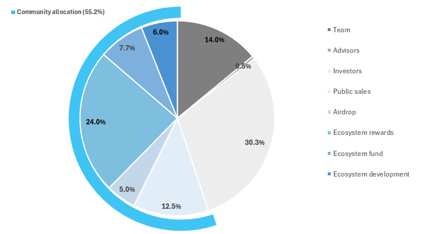
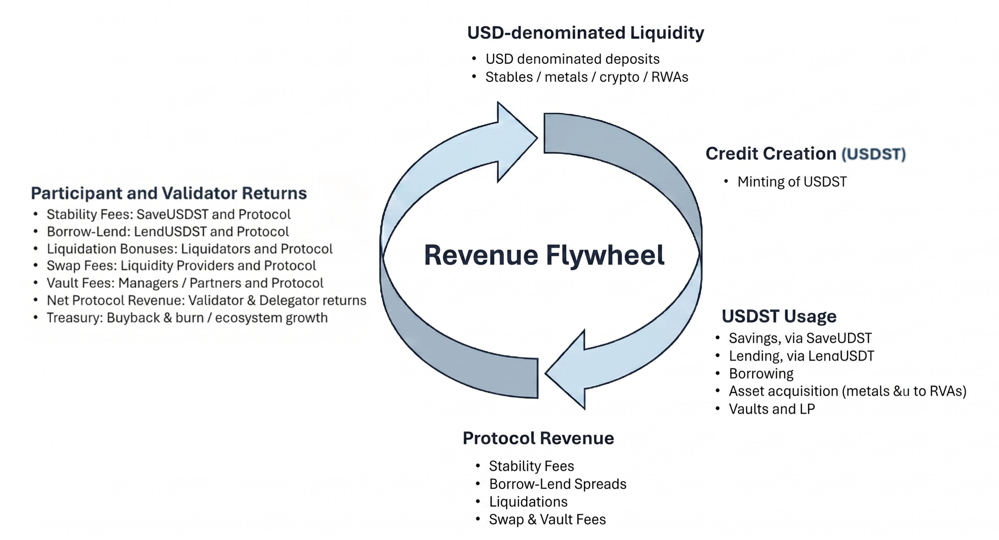

STRATO Litepaper¶
HardFi: Turning Gold Back into Money
Version 2.0
1. The HardFi Thesis: Turning Gold Back into Money¶
Bitcoin was going to change everything. The pitch was simple, and it looked like it had immediate use cases, like remittances. Where Western Union charged 20% to send money across borders, Bitcoin moved over the internet for almost nothing.
The real unlock came with stablecoins. USD stablecoins did the work that the first cryptocurrencies were supposed to do, settling trade, hedging local inflation, and moving across borders at internet speed. They became the financial inclusion instrument that the industry expected Bitcoin to be.
Stablecoins are backed by U.S. Treasuries. That model scales, and it works. It also imports the foundation of the legacy system into the new one, which sits in tension with the founding goal of crypto. The on-chain dollar inherits whatever the off-chain dollar carries.
Gold sits underneath all of it. It is the most trusted store of value and one of the oldest mediums of exchange, and central banks have been quietly returning to it. Their reserve allocations have shifted into gold to the point where gold now exceeds treasury holdings globally. Roughly half the world's population uses it as a default savings vehicle.
The problem with gold is mechanical, not monetary. Custody costs money, transfers take days or weeks, and it is difficult to audit. You can hold it, but you cannot spend it, send it, or borrow against it without going through a slow, expensive intermediary. This leads to over $30 trillion sitting in vaults, ETFs, and private holdings, earning nothing.
STRATO fixes the mechanics. We tokenize gold and silver with 1:1 physical backing and run them as native, audited, on-chain collateral. Holders mint USDST against the metal, deploy that USDST anywhere they need liquidity, and keep their underlying position intact. Gold gains instant transferability, infinite divisibility, and easy leverage. The metal does the job it always did.
This is HardFi: by tokenizing gold, we combine its legacy with the most powerful parts of DeFi. Keep the assets you like rather than sell them, and borrow against them to access the speed, convenience, and permissionless nature of DeFi.
2. The Market Opportunity¶
Stablecoins proved the demand for on-chain monetary assets. Over $200B in digital dollars now circulate, settling trade and providing liquidity in live markets. That figure is roughly 1% of the U.S. Treasury market, and analysts project the share will climb toward 10% over the coming years. Stablecoins are the established case for how a real-world asset scales once it moves on-chain.
Tokenized gold sits at 0.018%.
According to DefiLlama, only about $5.5B of the $30T global gold market lives on-chain. The gap between gold's importance as a savings asset and its presence on-chain is what STRATO is built to close. If tokenized gold tracks anywhere near the curve stablecoins ran, the room to grow is enormous.
Moving from dollars to stablecoins was a major unlock. Moving gold onto crypto rails may prove larger still, because gold is both less convenient to use today and more widely held around the world.
3. What STRATO Is¶
STRATO is an institutional-grade Layer-1 app-chain for real-world asset-backed credit. Three pieces define the stack.
Chain. An L1 built on the original Haskell Ethereum client, with EVM compatibility and a validator-based architecture. BlockApps shipped that Haskell core in 2014, before the Ethereum mainnet launched, and the codebase has been under continuous development for over a decade.
Stablecoin. USDST is STRATO's native USD-denominated stablecoin, minted through a Collateralized Debt Position (CDP). USDST is overcollateralized and redeemable into USDC and USDT.
Hard collateral. GOLDST and SILVST are fully backed, on-chain commodities. Each token represents physical gold or silver vaulted 1:1 and is physically redeemable. Crypto assets (ETH, BTC, LSTs), yield-bearing stables, and tokenized equities are also accepted as collateral.
The result is a stablecoin with a lower borrowing cost than comparable DeFi platforms, backed by collateral that holds value when crypto markets do not.
4. How It Works¶
A few mechanics sit underneath the user experience.
Minting USDST. A user deposits collateral, tokenized metals, other RWAs, or crypto, into a CDP, then mints USDST against it. Every position carries a collateralization ratio: the value of the collateral relative to the USDST minted against it. Users keep that ratio comfortably above the minimum, leaving a buffer against price moves. To unlock the collateral, the user repays the USDST and the accrued stability fee.
Maintaining the peg. USDST holds its $1 peg through overcollateralization. Every USDST in circulation is backed by collateral worth more than the dollar it represents. If a position falls below its minimum ratio, third-party liquidators repay the debt and claim the collateral at a discount, which closes risky positions before they threaten the system.
Custody and redemption. The gold and silver behind GOLDST and SILVST are held 1:1 and are physically redeemable. Reserves are auditable, so the on-chain token always corresponds to metal that exists off-chain.
The chain. STRATO runs on a Layer-1 built from the original Haskell Ethereum client. Haskell is common in high-assurance environments because its type system eliminates entire classes of runtime errors at compile time. On top of the chain, STRATO runs SolidVM, a virtual machine that keeps contracts human-readable at runtime, so a contract can be inspected for exactly what it does at any moment. The platform's smart contracts are audited (see Section 9).
5. Why USDST Is Different¶
USDST is a stablecoin, but it does not share the foundation of a Tether or a Circle. Most digital dollars are backed by U.S. Treasuries, which means they inherit the system they were meant to improve on. USDST is backed by hard assets first: gold, silver, crypto, and yield-bearing collateral, all overcollateralized and on-chain. The dollar peg is the output. The hard asset is the foundation.
That foundation matters most when USDST leaves the protocol.
Through the MetaMask Card, holders can spend USDST on everyday purchases anywhere the card is accepted: groceries, gas, restaurants, and travel. For the first time, the gold sitting in a vault can fund a cup of coffee. The user does not sell the metal. They mint dollars against it and spend, and their gold position is intact afterward.
This is what tokenized gold has been missing. Gold was money because it cleared at the point of sale. Modern custody made that impractical. STRATO restores the mechanic by letting gold back a stablecoin that spends like any other dollar, while the metal itself stays vaulted, audited, and redeemable.
6. Strategies for Capital¶
Borrowers mint USDST for two reasons, and both produce real protocol revenue.
Leverage and yield. A user mints USDST at ~2%, swaps into yield-bearing assets earning more, and loops the position. STRATO enables this carry trade against gold, silver, and other hard collateral to clear a spread net of fees.
Liquidity without selling. A user borrows against gold, silver, equities, or LSTs to fund expenses, rebalance, or buy a dip, keeping the position they wanted to hold in the first place. This is what the world's wealthiest already do with traditional credit lines: they borrow against their assets rather than sell them. STRATO opens the same pattern to anyone with hard assets and a wallet, no loan officer required.
Once minted, USDST has somewhere to go:
- Mint and borrow. Bridge core holdings into a CDP, mint USDST at low interest, and deploy that capital into higher-yield strategies. A conservative borrow ratio preserves a wide safety buffer against volatility.
- LP in the metastable pool. Pair saveUSDST with other yield-bearing stables in STRATO's metastable pool to earn trading fees and incentives.
- Passive growth via saveUSDST. Wrap USDST into the savings vault for a steady base return. This is the risk-off sleeve, with no liquidation exposure.
The structural advantage is the "double dip." A user posts collateral, mints USDST against it, and deploys that USDST back inside STRATO. They earn yield on the deployed capital, accrue ecosystem rewards on both legs, and keep full exposure to the underlying position. Every step of the loop also generates fees for the protocol.
7. Comparing Tokenized Gold Products¶
STRATO is not the first project to put gold on-chain. Paxos Gold (PAXG) and Tether Gold (XAUT) both tokenize physical gold, each token representing an amount of allocated gold held in a vault, and both have established themselves as ways to hold gold in a wallet.
The difference is what happens next. PAXG and XAUT are designed for holding. You can custody them, transfer them, and redeem them, but they sit in a wallet much the way bullion sits in a vault: as a store of value. STRATO is built so gold can be used. GOLDST and SILVST function as collateral. A holder can mint USDST against them, spend that USDST through the MetaMask Card, earn yield on it across the protocol, and still keep the underlying metal position.
Existing tokenized gold made gold easier to hold on-chain. STRATO makes it usable as money again.
8. The $STRATO Token¶
$STRATO is the economic coordination layer of the network. It aligns borrowers, lenders, liquidity providers, asset issuers, validators, and tokenholders around the same revenue base.
8.1 Supply and Distribution¶
Fixed supply of 100M $STRATO. 21.7% circulating at TGE. 55.2% allocated to the community.
| Category | Allocation | At TGE |
|---|---|---|
| Team | 14.0% | 0% |
| Advisors | 0.5% | 0.1% |
| Investors | 30.3% | 0% |
| Pre-TGE sales | 12.5% | 12.5% |
| Airdrop | 5.0% | 5.0% |
| Ecosystem rewards | 24.0% | 0.2% |
| Ecosystem fund | 7.7% | 3.8% |
| Ecosystem dev | 6.0% | 0% |

The liquid supply at TGE comes from the pre-TGE public sales, airdrop, and a portion of the ecosystem fund. Allocations beyond the TGE float are subject to an unlock schedule following the token generation event.
8.2 Utilities¶
Gas. Users pay gas in $STRATO or USDST.
Fee discounts for borrowers. Holding $STRATO reduces certain fees on certain on-platform actions.
Validator staking. Validators will need to stake a minimum amount of $STRATO to operate a node. Non-operators can delegate stake and earn pro-rata rewards.
Governance. Tokenholders stake $STRATO to vote on parameters like fees, collateral types, risk limits, treasury allocation, and incentive design.
8.3 Revenue Flywheel¶
The economic logic of $STRATO is straightforward: usage creates revenue, and revenue creates demand for the STRATO token.

Protocol revenue comes from real usage, the credit and liquidity activity flowing through the system. Revenue captured by the protocol is shared with validators.
Demand for $STRATO compounds across several sources at once: validator and delegator staking, stability fee discounts for borrowers, gas, and governance.
9. Security and Audits¶
BlockApps and Consensys Diligence are running a security engagement that pairs Consensys Diligence's AI auditing agent, Chonky, with STRATO's codebase. Consensys Diligence has audited Ethereum infrastructure since 2017, and Chonky extends that human-led analysis: it scans repositories continuously, and Consensys Diligence engineers guide and validate its findings.
The engagement now covers STRATO's full codebase, including the SolidVM virtual machine and the Solidity contracts built on top of it. Rather than a single point-in-time review, the goal is continuous auditing, where each scan builds on the last and the security posture moves with the code as it ships. Early results have been promising, with accuracy and depth improving across review cycles.
The two layers of assurance reinforce each other: a Haskell core that eliminates entire classes of errors at compile time, and AI-assisted auditing guided by a top-tier security firm running alongside development.
10. The Team¶
STRATO is built by the team behind the original Haskell Ethereum client and one of the longest-running enterprise blockchain practices in the industry.
Kieren James-Lubin, Co-Founder and CEO. Kieren entered crypto in 2014 as an early Ethereum contributor and developed the project's original Haskell client, which the team still uses today. He pioneered enterprise blockchain deployments at BlockApps before refocusing the company on consumer-grade rails for tokenized real-world assets and DeFi. He holds an A.B. in mathematics from Princeton and completed graduate work in mathematical physics at UC Berkeley. He is a co-founder and board alternate of the Enterprise Ethereum Alliance.
Jim Hormuzdiar, Co-Founder and CTO. Jim wrote the first commit of the Ethereum Haskell client in September 2014, implementing the EVM directly from the Yellow Paper. The Haskell client was one of six mainnet-compatible clients at Ethereum's Frontier launch in July 2015. Jim has architected enterprise-grade blockchain systems since then and continues to lead engineering for the STRATO platform.
Victor Wong, Co-Founder and CPO. Victor co-created the first Blockchain-as-a-Service offering, launched with Microsoft on Azure at DEVCON1 in 2015, and helped establish the Enterprise Ethereum Alliance. He developed some of the first real-world assets on private Ethereum networks and now leads product across BlockApps and STRATO.
BlockApps put the first RWAs on Ethereum in 2016, was a founding board member of the Enterprise Ethereum Alliance in 2017 and spent the following years on enterprise blockchain deployments across supply chain, energy, and asset tokenization before bringing that experience to consumer-grade DeFi and RWAs.
11. Backers¶
STRATO is developed by BlockApps, which has raised over $41M across multiple rounds from investors including Fenbushi Capital, ConsenSys Mesh, Bloccelerate, Galaxy Ventures, Morgan Creek Capital, and Liberty City Ventures.
Contact¶
Jeffry Powell, Head of BD at STRATO — jeff@strato.nexus — +1 917-714-4790
Resources: Docs: docs.strato.nexus · App: app.strato.nexus · Code: github.com/strato-net/strato-platform
This document is informational and does not constitute investment, legal, or tax advice. Yields, fees, tokenomics parameters, and protocol mechanics are described as designed and may be adjusted by governance over time. Token allocations and TGE percentages are subject to final confirmation at launch.